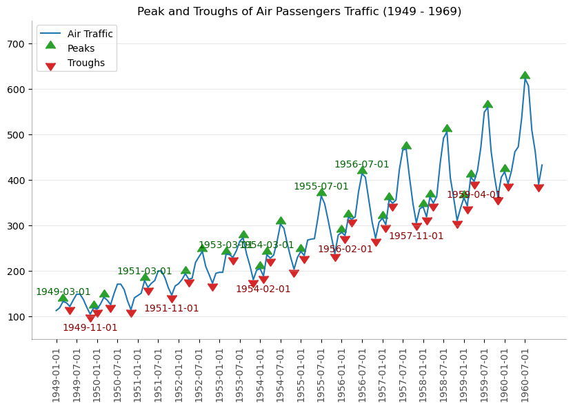
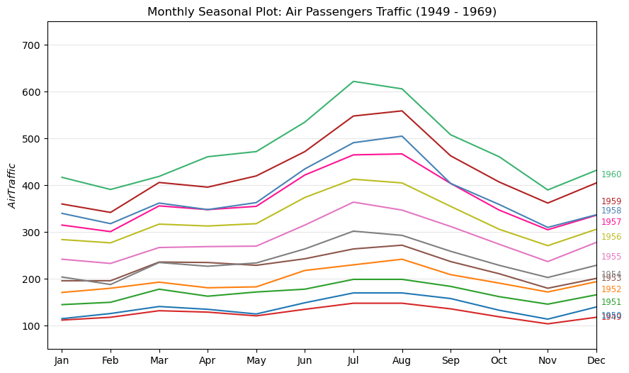
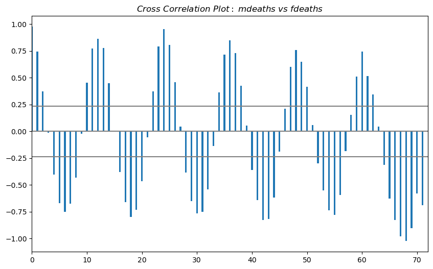
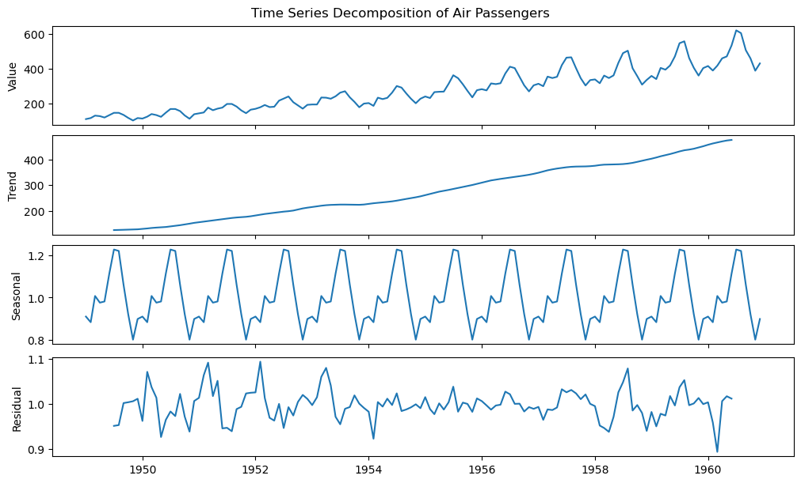
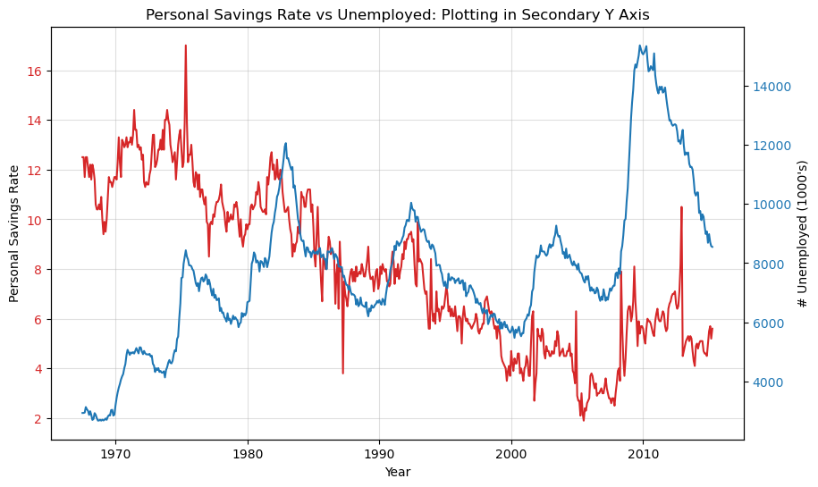
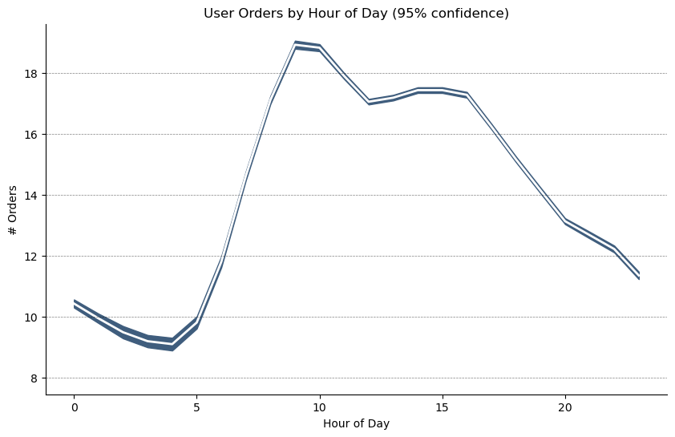
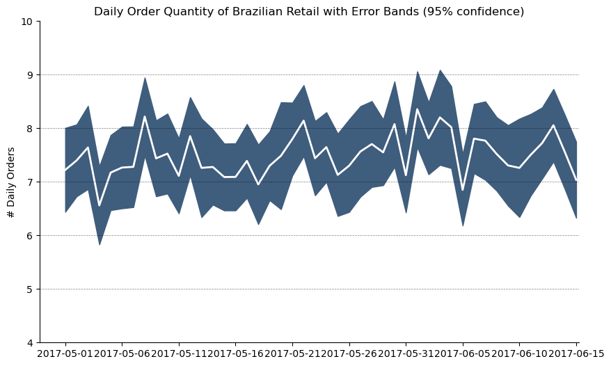
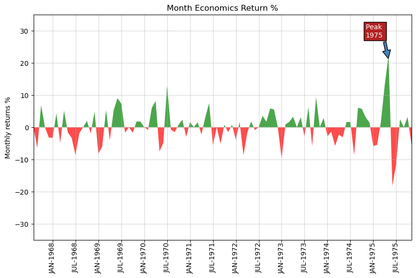
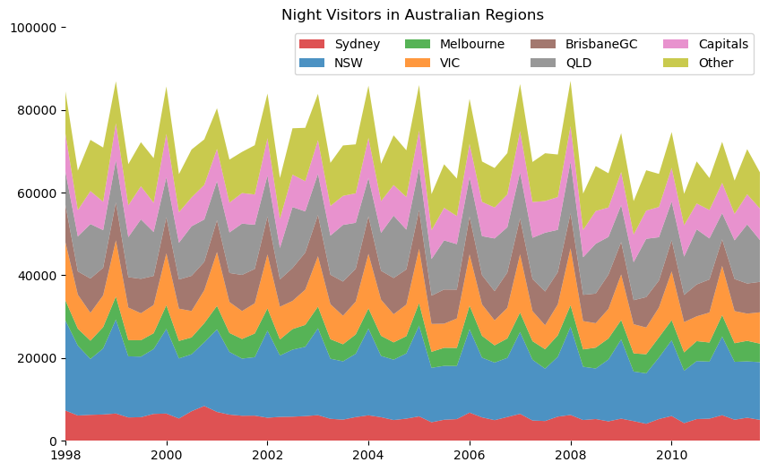
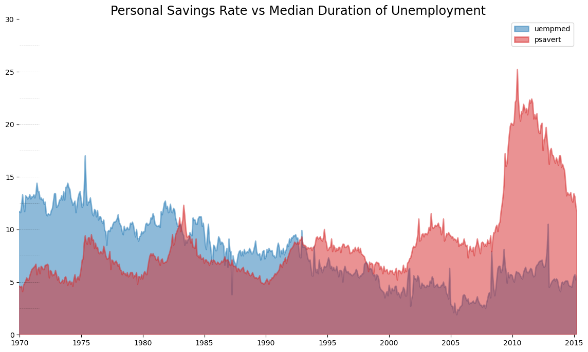

Time Series#
from dateutil.parser import parse
import matplotlib.pyplot as plt
import matplotlib as mpl
import numpy as np
import pandas as pd
/var/folders/py/n14256yd5r5ddms88x9bvsv40000gn/T/ipykernel_54078/886444550.py:5: DeprecationWarning:
Pyarrow will become a required dependency of pandas in the next major release of pandas (pandas 3.0),
(to allow more performant data types, such as the Arrow string type, and better interoperability with other libraries)
but was not found to be installed on your system.
If this would cause problems for you,
please provide us feedback at https://github.com/pandas-dev/pandas/issues/54466
import pandas as pd
Peaks#
passengers = pd.read_csv("data/air_passengers.csv")
passengers.head()
| date | value | |
|---|---|---|
| 0 | 1949-01-01 | 112 |
| 1 | 1949-02-01 | 118 |
| 2 | 1949-03-01 | 132 |
| 3 | 1949-04-01 | 129 |
| 4 | 1949-05-01 | 121 |
traffic = passengers.value
doublediff = np.diff(np.sign(np.diff(traffic)))
peak_locations = np.where(doublediff == -2)[0] + 1
doublediff2 = np.diff(np.sign(np.diff(-1 * traffic)))
trough_locations = np.where(doublediff2 == -2)[0] + 1
_, ax = plt.subplots(figsize=(10, 6))
ax.plot("date", "value", data=passengers, color="tab:blue", label="Air Traffic")
ax.scatter(
passengers.date[peak_locations],
passengers.value[peak_locations],
marker=mpl.markers.CARETUPBASE,
color="tab:green",
s=100,
label="Peaks",
)
ax.scatter(
passengers.date[trough_locations],
passengers.value[trough_locations],
marker=mpl.markers.CARETDOWNBASE,
color="tab:red",
s=100,
label="Troughs",
)
for t, p in zip(trough_locations[1::5], peak_locations[::3]):
ax.text(
passengers.date[p],
passengers.value[p] + 15,
passengers.date[p],
horizontalalignment="center",
color="darkgreen",
)
ax.text(
passengers.date[t],
passengers.value[t] - 35,
passengers.date[t],
horizontalalignment="center",
color="darkred",
)
xtick_location = passengers.index.tolist()[::6]
xtick_labels = passengers.date.tolist()[::6]
ytick_labels = passengers.value.tolist()[::6]
ax.set(ylim=(50, 750))
ax.set_xticks(ticks=xtick_location)
ax.set_xticklabels(labels=xtick_labels, rotation=90, alpha=0.7)
ax.set(title="Peak and Troughs of Air Passengers Traffic (1949 - 1969)")
ax.spines["top"].set_alpha(0.0)
ax.spines["bottom"].set_alpha(0.3)
ax.spines["right"].set_alpha(0.0)
ax.spines["left"].set_alpha(0.3)
ax.legend(loc="upper left")
ax.grid(axis="y", alpha=0.3)
plt.show()

Seasonal#
passengers["year"] = [parse(d).year for d in passengers.date]
passengers["month"] = [parse(d).strftime("%b") for d in passengers.date]
years = passengers["year"].unique()
mycolors = [
"tab:red",
"tab:blue",
"tab:green",
"tab:orange",
"tab:brown",
"tab:grey",
"tab:pink",
"tab:olive",
"deeppink",
"steelblue",
"firebrick",
"mediumseagreen",
]
_, ax = plt.subplots(figsize=(10, 6))
for i, y in enumerate(years):
ax.plot(
"month",
"value",
data=passengers.query(f"year=={y}"),
color=mycolors[i],
label=y,
)
ax.text(
passengers.query(f"year=={y}").shape[0] - 0.9,
passengers.query(f"year=={y}")["value"].loc[-1:].array[0],
y,
fontsize="small",
color=mycolors[i],
)
ax.set(
xlim=(-0.3, 11),
ylim=(50, 750),
ylabel="$Air Traffic$",
title="Monthly Seasonal Plot: Air Passengers Traffic (1949 - 1969)",
)
ax.grid(axis="y", alpha=0.3)
plt.show()

Cross Correlation#
import statsmodels.tsa.stattools as stattools
mortality = pd.read_csv("data/mortality.csv")
mortality.head()
| date | mdeaths | fdeaths | |
|---|---|---|---|
| 0 | Jan 1974 | 2134 | 901 |
| 1 | Feb 1974 | 1863 | 689 |
| 2 | Mar 1974 | 1877 | 827 |
| 3 | Apr 1974 | 1877 | 677 |
| 4 | May 1974 | 1492 | 522 |
x = mortality["mdeaths"]
y = mortality["fdeaths"]
ccs = stattools.ccf(x, y)[:100]
nlags = len(ccs)
conf_level = 2 / np.sqrt(nlags)
_, ax = plt.subplots(figsize=(10, 6))
ax.hlines(0, xmin=0, xmax=100, color="gray")
ax.hlines(conf_level, xmin=0, xmax=100, color="gray")
ax.hlines(-conf_level, xmin=0, xmax=100, color="gray")
ax.bar(x=np.arange(len(ccs)), height=ccs, width=0.3)
ax.set(xlim=(0, len(ccs)), title="$Cross\ Correlation\ Plot:\ mdeaths\ vs\ fdeaths$")
plt.show()

Decomposition#
from statsmodels.tsa.seasonal import seasonal_decompose
passengers = pd.read_csv("data/air_passengers.csv")
passengers.head()
| date | value | |
|---|---|---|
| 0 | 1949-01-01 | 112 |
| 1 | 1949-02-01 | 118 |
| 2 | 1949-03-01 | 132 |
| 3 | 1949-04-01 | 129 |
| 4 | 1949-05-01 | 121 |
date = passengers["date"]
dates = pd.DatetimeIndex(data=date)
passengers.set_index(dates, inplace=True)
result = seasonal_decompose(passengers["value"], model="multiplicative")
fig, axes = plt.subplots(4, 1, figsize=(10, 6), sharex=True, constrained_layout=True)
ys = (result.observed, result.trend, result.seasonal, result.resid)
ylabels = ("Value", "Trend", "Seasonal", "Residual")
for ax, y, ylabel in zip(axes.flatten(), ys, ylabels):
ax.plot(dates, y)
ax.set(ylabel=ylabel)
fig.suptitle("Time Series Decomposition of Air Passengers")
plt.show()

Doule Y#
economics = pd.read_csv("data/economics.csv", parse_dates=["date"])
economics.head()
| date | pce | pop | psavert | uempmed | unemploy | |
|---|---|---|---|---|---|---|
| 0 | 1967-07-01 | 507.4 | 198712 | 12.5 | 4.5 | 2944 |
| 1 | 1967-08-01 | 510.5 | 198911 | 12.5 | 4.7 | 2945 |
| 2 | 1967-09-01 | 516.3 | 199113 | 11.7 | 4.6 | 2958 |
| 3 | 1967-10-01 | 512.9 | 199311 | 12.5 | 4.9 | 3143 |
| 4 | 1967-11-01 | 518.1 | 199498 | 12.5 | 4.7 | 3066 |
x = economics["date"]
y1 = economics["psavert"]
y2 = economics["unemploy"]
_, ax = plt.subplots(figsize=(10, 6))
ax.plot(x, y1, color="tab:red")
# Plot Line2 (Right Y Axis)
ax2 = ax.twinx() # instantiate a second axes that shares the same x-axis
ax2.plot(x, y2, color="tab:blue")
ax.set(xlabel="Year")
ax.tick_params(axis="x", rotation=0)
ax.set(ylabel="Personal Savings Rate")
ax.tick_params(axis="y", rotation=0, labelcolor="tab:red")
ax.grid(alpha=0.4)
ax2.set(ylabel="# Unemployed (1000's)")
ax2.tick_params(axis="y", labelcolor="tab:blue")
ax2.set(title="Personal Savings Rate vs Unemployed: Plotting in Secondary Y Axis")
plt.show()

SEM#
from scipy.stats import sem
orders = pd.read_csv("data/user_orders_hourofday.csv")
orders.head()
| user_id | order_hour_of_day | quantity | |
|---|---|---|---|
| 0 | 1 | 7 | 20 |
| 1 | 1 | 8 | 23 |
| 2 | 1 | 9 | 12 |
| 3 | 1 | 12 | 11 |
| 4 | 1 | 14 | 10 |
orders_mean = orders.groupby("order_hour_of_day").quantity.mean()
orders_se = orders.groupby("order_hour_of_day").quantity.apply(sem).mul(1.96)
x = orders_mean.index
fig, ax = plt.subplots(figsize=(10, 6))
ax.set(ylabel="# Orders")
ax.plot(x, orders_mean, color="white", lw=2)
ax.fill_between(x, orders_mean - orders_se, orders_mean + orders_se, color="#3F5D7D")
ax.spines["top"].set_alpha(0)
ax.spines["bottom"].set_alpha(1)
ax.spines["right"].set_alpha(0)
ax.spines["left"].set_alpha(1)
ax.set(title="User Orders by Hour of Day (95% confidence)")
ax.set(xlabel="Hour of Day")
s, e = ax.get_xlim()
ax.set(xlim=(s, e))
for y in range(8, 20, 2):
ax.hlines(y, xmin=s, xmax=e, colors="black", alpha=0.5, linestyles="--", lw=0.5)
plt.show()

from dateutil.parser import parse
from scipy.stats import sem
orders_45d = pd.read_csv(
"data/orders_45d.csv", parse_dates=["purchase_time", "purchase_date"]
)
orders_45d.head()
| purchase_time | purchase_date | quantity | |
|---|---|---|---|
| 0 | 2017-05-16 13:10:30 | 2017-05-16 | 5 |
| 1 | 2017-05-16 19:41:10 | 2017-05-16 | 3 |
| 2 | 2017-05-19 18:53:40 | 2017-05-19 | 2 |
| 3 | 2017-05-18 13:55:47 | 2017-05-18 | 1 |
| 4 | 2017-05-14 20:28:25 | 2017-05-14 | 3 |
orders_mean = orders_45d.groupby("purchase_date").quantity.mean()
orders_se = orders_45d.groupby("purchase_date").quantity.apply(sem).mul(1.96)
x = [d.date().strftime("%Y-%m-%d") for d in orders_mean.index]
_, ax = plt.subplots(figsize=(10, 6))
ax.plot(x, orders_mean, color="white", lw=2)
ax.fill_between(x, orders_mean - orders_se, orders_mean + orders_se, color="#3F5D7D")
ax.spines["top"].set_alpha(0)
ax.spines["bottom"].set_alpha(1)
ax.spines["right"].set_alpha(0)
ax.spines["left"].set_alpha(1)
ax.set(ylabel="# Daily Orders")
ax.set_xticks(np.arange(0, len(x), 5))
ax.set(
title="Daily Order Quantity of Brazilian Retail with Error Bands (95% confidence)"
)
s, e = ax.get_xlim()
ax.set(xlim=(s, e - 2), ylim=(4, 10))
for y in range(5, 10):
ax.hlines(y, xmin=s, xmax=e, colors="black", alpha=0.5, linestyles="--", lw=0.5)
plt.show()

Area#
economics = pd.read_csv("data/economics.csv", parse_dates=["date"])
x = np.arange(economics.shape[0])
y_returns = (economics.psavert.diff().fillna(0) / economics.psavert.shift(1)).fillna(
0
) * 100
_, ax = plt.subplots(figsize=(10, 6))
ax.fill_between(
x[1:],
y_returns[1:],
0,
where=y_returns[1:] >= 0,
facecolor="green",
interpolate=True,
alpha=0.7,
)
ax.fill_between(
x[1:],
y_returns[1:],
0,
where=y_returns[1:] <= 0,
facecolor="red",
interpolate=True,
alpha=0.7,
)
ax.annotate(
"Peak \n1975",
xy=(94.0, 21.0),
xytext=(88.0, 28),
bbox=dict(boxstyle="square", fc="firebrick"),
arrowprops=dict(facecolor="steelblue", shrink=0.05),
fontsize="medium",
color="white",
)
xtickvals = [
f"{str(m)[:3].upper()}-{str(y)}"
for y, m in zip(economics.date.dt.year, economics.date.dt.month_name())
]
ax.set_xticks(x[::6])
ax.set_xticklabels(
xtickvals[::6],
rotation=90,
fontdict={"horizontalalignment": "center", "verticalalignment": "center_baseline"},
)
ax.set(
xlim=(1, 100),
ylim=(-35, 35),
title="Month Economics Return %",
ylabel="Monthly returns %",
)
ax.grid(alpha=0.5)
plt.show()

Stacked Area#
visitors = pd.read_csv("data/night_visitors.csv", parse_dates=["yearmon"])
visitors.head()
/var/folders/py/n14256yd5r5ddms88x9bvsv40000gn/T/ipykernel_54078/1398973000.py:1: UserWarning: Could not infer format, so each element will be parsed individually, falling back to `dateutil`. To ensure parsing is consistent and as-expected, please specify a format.
visitors = pd.read_csv("data/night_visitors.csv", parse_dates=["yearmon"])
| yearmon | Sydney | NSW | Melbourne | VIC | BrisbaneGC | QLD | Capitals | Other | |
|---|---|---|---|---|---|---|---|---|---|
| 0 | 1998-01-01 | 7320 | 21782 | 4865 | 14054 | 9055 | 8016 | 9178 | 10232 |
| 1 | 1998-04-01 | 6117 | 16881 | 4100 | 8237 | 5616 | 8461 | 6362 | 9540 |
| 2 | 1998-07-01 | 6282 | 13495 | 4418 | 6731 | 8298 | 13175 | 7965 | 12385 |
| 3 | 1998-10-01 | 6368 | 15963 | 5157 | 7675 | 6674 | 9092 | 6864 | 13098 |
| 4 | 1999-01-01 | 6602 | 22718 | 5550 | 13581 | 9168 | 10224 | 8908 | 10140 |
mycolors = [
"tab:red",
"tab:blue",
"tab:green",
"tab:orange",
"tab:brown",
"tab:grey",
"tab:pink",
"tab:olive",
]
columns = visitors.columns[1:]
labs = columns.array.tolist()
x = visitors["yearmon"].array.tolist()
ys = []
for i in range(8):
yi = visitors[columns[i]].array.tolist()
ys.append(yi)
y = np.vstack(ys)
labs = columns.array.tolist()
_, ax = plt.subplots(figsize=(10, 6))
ax.stackplot(x, y, labels=labs, colors=mycolors, alpha=0.8)
ax.set(ylim=[0, 100000], title="Night Visitors in Australian Regions")
ax.set(xlim=(x[0], x[-1]))
ax.spines[["right", "top", "left", "bottom"]].set_visible(False)
ax.legend(ncol=4)
plt.setp(ax.get_xticklabels()[::5], horizontalalignment="center")
plt.setp(ax.get_yticklabels()[::5], horizontalalignment="right")
plt.show()

Unstacked Area#
x = economics["date"].array.tolist()
y1 = economics["psavert"].array.tolist()
y2 = economics["uempmed"].array.tolist()
mycolors = [
"tab:red",
"tab:blue",
"tab:green",
"tab:orange",
"tab:brown",
"tab:grey",
"tab:pink",
"tab:olive",
]
columns = ["psavert", "uempmed"]
fig, ax = plt.subplots(1, 1, figsize=(14, 8))
ax.fill_between(x, y1=y1, y2=0, label=columns[1], alpha=0.5, color=mycolors[1], lw=2)
ax.fill_between(x, y1=y2, y2=0, label=columns[0], alpha=0.5, color=mycolors[0], lw=2)
ax.set(
xlim=(-10, x[-1]),
ylim=[0, 30],
)
ax.set_title(
"Personal Savings Rate vs Median Duration of Unemployment", fontsize="xx-large"
)
ax.legend(loc="best")
plt.setp(ax.get_xticklabels()[::50], horizontalalignment="center")
plt.setp(ax.get_yticklabels()[::50], horizontalalignment="right")
for y in np.arange(2.5, 30.0, 2.5):
ax.hlines(
y, xmin=0, xmax=len(x), colors="black", alpha=0.3, linestyles="--", lw=0.5
)
ax.spines[["right", "top", "left", "bottom"]].set_visible(False)
plt.show()
